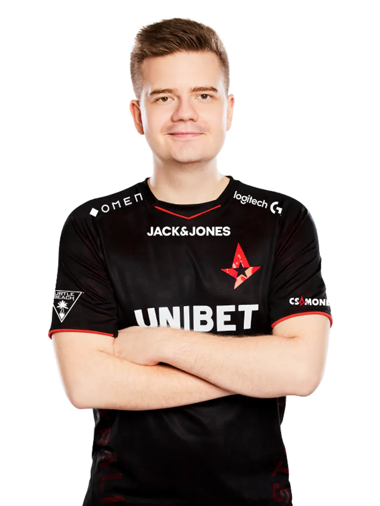
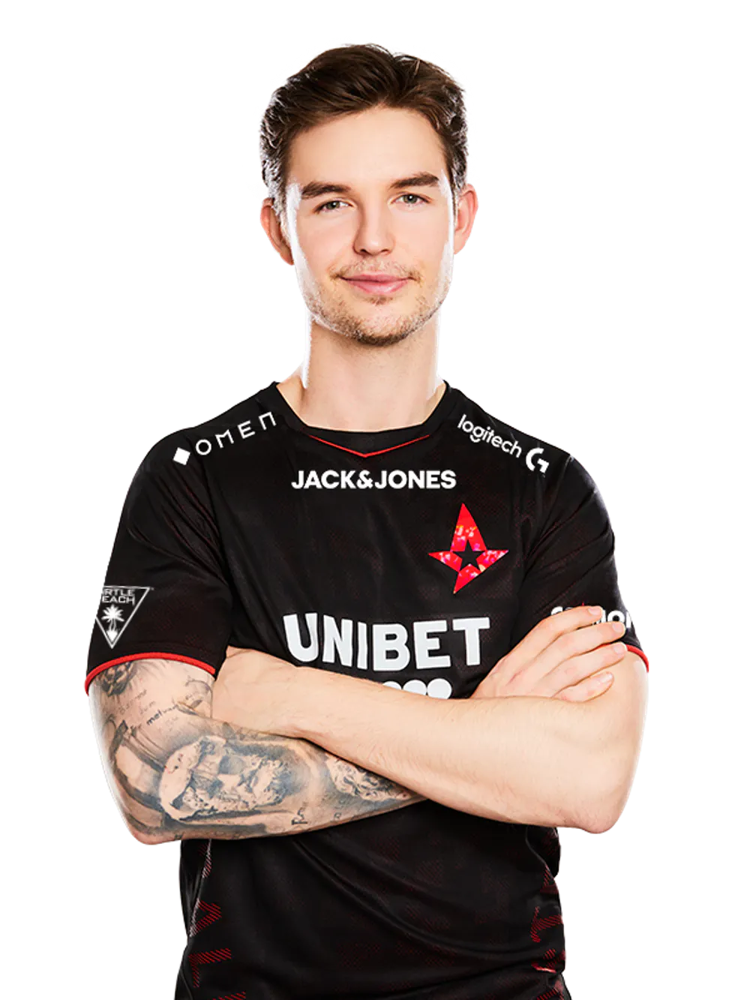
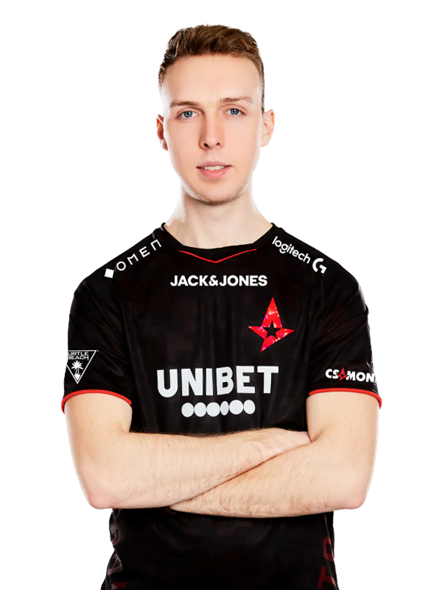
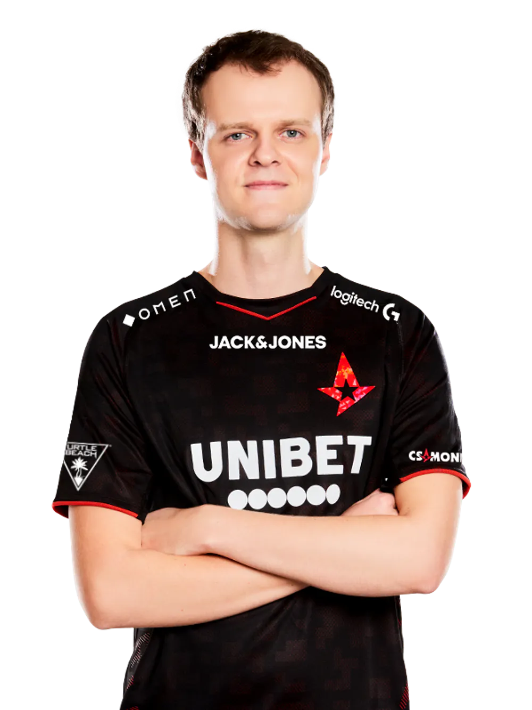
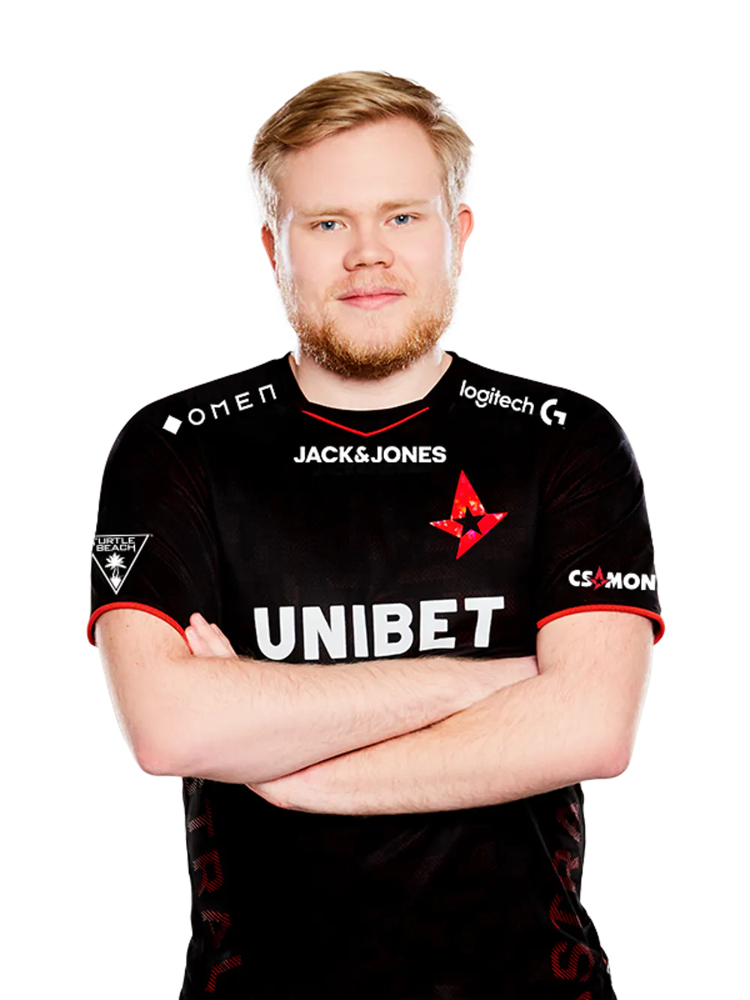

Astralis

dupreeh
Один из самых смертоносных игроков Counter-Strike и один из основателей Astralis. dupreeh - чрезвычайно разносторонний игрок, и за всю историю команды он несколько раз менял свою роль. Он может играть роль дамагера с почти идеальным позиционированием и может использовать AWP, чтобы помочь основному снайперу команды Николаю 'dev1ce' Ридцу. После первой крупной победы Astralis на ELEAGUE Atlanta 2017, dupreeh впервые в своей карьере пробился в топ-10 в списке «Лучшие игроки мира» и был назван MVP после того, как помог Astralis выиграть свой первый в истории турнир ESL Pro League.
device
В 2016 году dev1ce стал соучредителем Astralis и взял на себя роль команды AWP в том же году. Он быстро адаптировался к роли, которую никогда раньше не играл на полную ставку, и закончил год с хорошими оценками - статистика, которая со временем только улучшалась. Когда Astralis выиграл свой второй майор в Лондоне в 2018 году, dev1ce получил свою первую награду MVP на майоре и стал вторым лучшим игроком в мире. Он выиграл свой второй Major MVP на берлинской Major в 2019 году. На сегодняшний день dev1ce имеет больше наград MVP, чем любой другой игрок в мире: 15. Игрок мирового уровня держит еще один невероятный рекорд. Последние пять лет dev1ce остается в пятерке лучших игроков мира, последний раз занимавший 3-е место в рейтинге 2019 года. Карьера Николая 'dev1ce' Ридца была стабильным подъемом к славе, и эксперты считают его общий послужной список одним из лучших среди профессиональных игроков Counter-Strike.
gla1ve
В первые несколько лет своей профессиональной карьеры в CS: GO gla1ve часто играл против ядра Astralis в различных датских командах. Но в октябре 2016 года известный тактик взял на себя роль игрового лидера для Astralis. С тех пор вдохновитель Counter-Strike приводил свою команду к звездам бесчисленное количество раз. Астралис и gla1ve завершили 2016 год в качестве чемпионов финала второго сезона ECS, быстро установив свою ценность для команды. 2017 год начался с ELEAGUE Major в Атланте, где Astralis провели свой первый Большой Гранд Финал против польской команды Virtus.Pro. Столкнувшись с устранением в очень близком финале, gla1ve сделал несколько чрезвычайно смелых звонков, которые в конечном итоге привели команду к их первому главному титулу - свидетельство способности gla1ve как лидера перед лицом пугающих шансов. В 2018 году gla1ve был назван 8-м лучшим игроком в мире и самым высоким рейтингом в игре. По сей день Glave все еще считается одним из величайших стратегов всех времен.
Xyp9x
Будучи одним из основателей Astralis, Xyp9x начал завоевывать печально известную репутацию лучшего клатчера в мире, игрока с ловкостью для выигрыша раундов как последнего, живого против нескольких врагов, дав ему соответствующее прозвище «Министр сцепления». В 2017 году Astralis выиграл IEM Katowice 2017, где Xyp9x продемонстрировал чудовищное выступление, которое принесло ему первую награду MVP на престижном турнире. Уровень министра сцепления увидел невероятное улучшение в 2018 году, где он занял второе место для нескольких наград MVP и движущим фактором в выводе Astralis из групповой стадии на FACEIT Major в Лондоне, который станет вторым главным званием команды. В 2018 году Xyp9x был назван 13-м лучшим игроком в мире и 14-м лучшим в 2019 году, показав, насколько последовательным он является якорем Astralis.
Magisk
Эмиль «Магиск» Рейф привлек к себе большое внимание благодаря своим выступлениям на нижних уровнях Counter-Strike в 2015 году. В последующие годы Магиск будет играть за несколько разных команд, но в 2018 году ему предложили шанс на всю жизнь с Astralis. Изменения в составе, которые быстро принесут пользу как молодой звезде, так и команде. Магиск из DreamHack Masters Marseille в 2018 году по-настоящему поддержал команду и выиграл свой первый мажор в Astralis в том же году. Магиск имел большой вес с точки зрения победы своего второго майора с Astralis в IEM Katowice, где он был назван Major MVP после звездного выступления. Доминирующее выступление поставило Magisk на седьмое место среди лучших игроков в мире в 2018 году, и это его самое высокое место. Он побьет этот рекорд в 2019 году как 5-й лучший игрок в мире.
